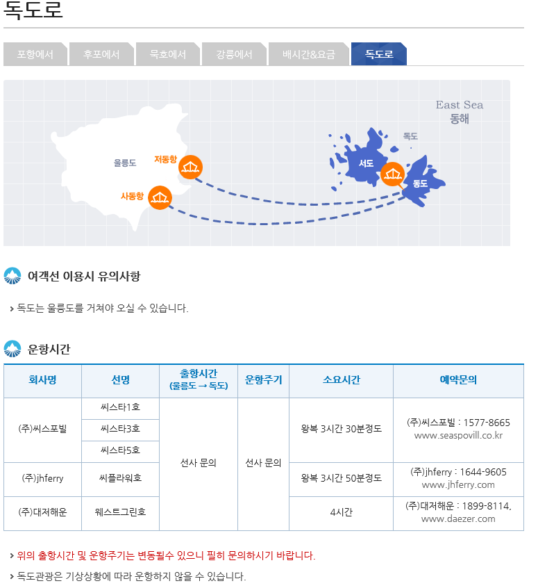

울릉도 추천관광지
개인적인 추천지임 (가본곳중에서 추천 )
1. 태하향목관광모노레일 & 대풍감

태하향목관광모노레일을 6분정도 타고 올라간 후 산책로를 20분 정도 가면 울릉도등대(태하등대) 및 향목지질스카이워크가 있다.
향목지질스카이워크에서 바라본 북면 해안은 월간지 '산'에서 우리나라의 10대 비경으로 꼽은 곳이다.
대풍감에 자생하는 향나무들은 주상절리, 즉 암석 틈이 풍화되어 만들어진 소량의 토양에 뿌리를 내려 자라면서 오랫동안 육지와 격리되어 독특한 생태환경을 이루었으며,
그 가치가 높아 천연기념물 제49호로 지정되었다.
운행시간 : 09:00~17:30 (매표시간 09:00 ~ 16:30)
전화 054-790-6638
주소 경상북도 울릉군 서면 태하길 236
관련 홈페이지 울릉도·독도 지질공원
2. 도동해안 산책로

도동 해안산책로도동 해안산책로는 저동 해안산책로와 이어지며, 이들을 통틀어 행남 해안산책로라고 부른다.
도동 해안산책로는 울릉도 초기 화산활동의 특징을 간직한 다양한 지질구조가 관찰된다.
도동항에 위치하여 출항시 둘러보는 것도 괜찮을 듯하다.
3. 독 도

동절기에는 이용이 어렵기 때문에 5월~9월이 파도가 잔잔해 배가 뜰 확률이 높아 성수기에 해당한답니다.
이 때 역시 그 날 날씨에 따라 배가 뜨기 힘든 경우가 있슴
울릉도에서 배를 타고 독도까지 약 2시간 동안 이동 독도에 도착하면 약 20~30분 간 섬을 돌아본 뒤 나와야 함.
배 승선시에는 신분증이 필수이니 꼭 챙겨가세요

관련 홈페이지
울릉군 문화관광